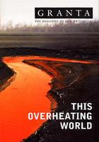

Do Fish Feel Pain?
The answer is 'yes' says James Hamilton-Paterson and we should accept the consequences—as he does. 'I shall live with my own blood deeds, though not tormentedly.'Spearing fish is a savage business. It causes the fish gross physical damage and seldom kills them outright. Over several years I spent long months at a stretch living on an islet in the Philippines, learning how to spear fish in the local manner to feed myself. I had a lot to learn about the construction of spearguns and about the techniques of underwater hunting without scuba gear, whether diving alone or in company. But I also had to unlearn my own culture’s ideas of the acceptable ways of treating game animals.
The locals were certainly short on sportsmanship. Their style was to hunt at night when many reef species are dozy, if not—like mullet—apparently fast asleep. In one hand we gripped a cheap torch ingeniously waterproofed with rubber or plastic and in the other an unwieldy wooden gun powered by rubber cut from inner tubes. With both hands thus occupied we held our breath and swam down into pitchy depths, maybe to thirty feet, in pursuit of the next day’s food. The steel spear was eyed at its base like a needle. Spliced through this hole was a length of polythene fishing-line with a stop at the end. The technique was to spear the fish or cephalopod and sweep it on down to the end of the line so that it trailed behind as you reloaded the gun and went on searching. After two or three hours of this the torch batteries were flat and we dragged ourselves from the sea, coral-grazed and weary, with grains of luminescence running off our bodies and, with any luck, a few pounds of edible flesh on our lines.
I soon realized there is a big difference between a coarse fisherman sitting on a river bank, hauling up and killing his catch with a quick blow from a priest, and sharing a medium with one’s prey. Below the surface, encumbered with gear and limited to snatched lungfuls of air, you are at a huge disadvantage in any hunt. Yet you can stare your quarry in the eye through a few feet of water, learn to read its slightest twitch or attitude (such particulars vary with the species), slowly acquire familiarity with the behaviour and appearance of all sorts of marine creatures. Down there you can hear the spear actually strike, pok!, hear the animal’s whirring struggles, maybe its squawks or grunts, see the dark strands of blood, watch its mouth jerk open in a hopeless O. That was the moment of maximum adrenaline because you still had not caught your supper. Often the spear struck too close to the edge of your prey’s body or the barb failed to set and the animal could tear itself loose to escape in the dark with the flick of a fin. Often, too, you were at the end of your breath and desperate for air, and perhaps the fish was large enough to swim away even towing the weight of the spear. To lose a spear was shaming and besides, they took a lot of making. For every reason, then, it was necessary to make a supreme effort and lunge forward as fast as possible to get a grip on both spear and fish. If in doubt you safely ‘threaded’ the animal with a further stitch by pushing the spear completely through and piercing it again in a more secure place: typically through both eyes or behind one operculum (gill cover) and out through the mouth. Often you had to surface, bursting with stale air, and dizzily perform this operation while buffeted by black waves in a tangle of line and barbed spear and struggling prey, the torch clenched beneath one arm and the wooden gun beneath the other. It was not an easy way to feed yourself.
But even in that triumphant moment of the hunt I remember not enjoying pushing a steel rod through a living creature’s eyes. I could feel the slight scrunch of bone and it was gruesome to release it then and watch by torchlight as it swam furiously in all directions with the line through its head, trailing its sightless eyeballs. If the fish was big it was best to kill it straight away because its tuggings could seriously upset your aim, while a dying stingray could blunder into your legs with its agonizing thorn. For this humane deed we would carry a knife strapped to one ankle. But we indifferently allowed smaller fish and cephalopods to die of their wounds. It was noticeable that some species (cuttlefish, parrot fish) tended to die more quickly than others. Moray eels (a fearsome prey underwater at night) and porcupine fish (whose livers were delicious) could survive for hours, even out of water. In those rural backwaters where there are few refrigerators, wounded game is habitually kept alive as long as possible, whether birds, fruit bats or fish.
By day, when not asleep, mending gear or fetching water over from the mainland, I would drift for hours face down among the reefs watching the creatures that lived there. I do not believe that a nature photographer stalking the one great shot or a marine biologist hoping to make a career-boosting discovery watches with sharper attention than the hunter-gatherer needing to fill his stomach. Thus it is often claimed that hunters know their prey with a degree of intimacy that mixes fear, affection and respect to form a bond at least as great as that of zookeepers, big-cat tamers or the leathery ladies who live with apes in the wild. This may be a piece of special pleading based on sentimental hokum, I can’t judge. But I do know that for months at a stretch the sea inhabited me as much as I it; that the castles, thoroughfares and alleys of the offshore reefs, together with their tiniest inhabitants, became as familiar and fond to me as a native city. Like any angler who grows intimate with the hoary old pike he despairs of ever catching, I was on greeting terms with a vast grouper that lived in a hollow outcrop twenty feet down. I was almost certain he could no longer get out; that he had probably swum in as a juvenile and grown fat on the fish that wandered in and out of the small holes through which I could glimpse his mottled hide. I came to feel a real affection for this creature: a hopeless piscine equivalent of Garfield who had indolently grown to fill his own prison. He would have been easy to shoot, impossible to retrieve. I could no more have speared him than I could my own foot, and I never told anyone of his existence because I knew the locals would have had no such qualms but would have dragged him out in bleeding lumps.
More fleeting but just as intense were the acquaintances I struck up with cuttlefish. We would lie within yards of one another for long moments and gaze into each other’s eyes. Impossible not to see intelligence of a kind in those crumpled pupils, in the violet lightnings playing around their mantles, the passing clouds of changing colours in the chromatophores beneath their skin. That long moment, with the creatures warily poised for flight and the tentacles bunched downwards in what I came to think of as their ‘horse’s head’ attitude, looked as much like thought as it did a knife-edged awareness.
I was entranced, but an entranced hunter nevertheless. Still, I could be caught unawares in moments of sleep or reflection by images of the violence I so regularly committed at night. I employed several strategies to suppress my unease. I told myself that fish brains were far too rudimentary for the creatures to experience pain in the way humans did, conscious of a desire for it to stop. They were cold-blooded, too. Inconceivable to imagine gripping a puppy in one hand and shoving a barbed spear in through one eye and out the other. I even managed to convince myself that by transfixing a fish’s eyes I was swiftly killing it by destroying its brain, and that its violent swimming motions afterwards were like a beheaded chicken flapping its wings. I told myself this even as I knew it to be untrue: that the brains of most fish species are not between their eyes, as I regularly discovered when sucking every last morsel from the skulls of my barbecued prey. I told myself the grunts of apparent anguish made by some fish on being speared were merely an alarm response to warn their kind; that any notion of distress was too anthropomorphic to apply to a cold-blooded and relatively brainless creature. And when some species opened their mouths in what looked like a rictus of agony it was surely just a way of expelling whatever they had just eaten (and sometimes a cloud of particles did come out), the better to hyperventilate.
But the most effective way of drowning my misgivings was by reference to local habit. The village youths and men who fed their families did so without the luxury of remorse. They needed as much food as they could catch as quickly as possible, and the efficient flurry of the enterprise was its own rationale. I wished to be accepted, to prove a reliable companion in the hunt, someone who didn’t panic when his spear jammed immovably into coral fifteen feet down and the nylon line looped itself around one ankle in the darkness. I was exhibiting a syndrome comparable to that of soldiers on the battlefield who are shamed into bravery by the mere presence of their comrades, more scared of accusations of cowardice than of mortal injury. In this way I noticed peer pressure making me crueller in company than when I fished alone, an unwelcome reminder of something I had noticed thirty years earlier as a boy when hunting pigeons with a .410 and butterflies with a killing jar. In the presence of others my dying victims lost their individuality and became safely generic. I now wonder whether this same syndrome, much disguised and domesticated, is what underpins the way we shop for chicken or frozen fish-fingers without a thought to the deaths of individual animals. Our friends and neighbours do it; everybody does it. A worldwide economy encourages our habit. How can it be wrong? Those pale, shrink-wrapped bricks of deep-frozen stuff are a commodity. It seems bad taste to break the pact and say that it was once the flesh of living creatures who on our behalf have been put to death for it. At least (I tell myself) I have often bloodied my own hands to eat. I have personally stopped little fish-hearts; I have executed my own hens. I understand why from the point of view of one’s conscience it feels better to have hunted and killed individual creatures to feed oneself than to have hired anonymous slaughterers and then callously pretend the ‘product’ had never truly lived. From the ethical point of view, though, it probably makes no difference; and it is ethical matters that we must consider.
‘Do fish feel pain?’ is a subsection of the more general question of whether any animal experiences pain as humans do. This in turn splits broadly into two lines of enquiry: the philosophical and the physiological. Both are narrowly watched by the evangelists of the animal-rights movement who cherry-pick research results to suit their cause. Science has largely concentrated on identifying the neural pathways, nociceptors (pain-sensitive receptors) and areas of the human brain involved in sensing pain, as well as listing the symptoms associated with it (crying out, increased heart rate, muscular tension, raised temperature, etc.). Inevitably, our assessment of the varying ability of non-human animals to experience pain is anthropocentric, judged as being more or less likely according to how nearly their nervous systems approximate to ours. The majority of pain research so far has been conducted on mammals such as monkeys, cats, pigs and rats; a good deal less on birds; and not much at all on lower vertebrates and invertebrates. Here, it is probably relevant that the US Animal Welfare Act deals exclusively with mammals and birds and ignores cold-blooded animals. To date, this approach has produced results that pretty much tally with the daily experience of veterinary workers and with what most of us instinctively feel. There is a consensus that while all vertebrates can probably feel pain, most invertebrates probably can’t, with the likely exception of the cephalopod molluscs (squid, cuttlefish, octopus, nautilus).
This sounds neat enough, but not for long. Firstly, the notion of the normal human brain as exemplar of the fully developed cerebrum deemed necessary for a full awareness of pain can break down badly (as it also does for intelligence) in dramatic cases like that cited by the British neurologist John Lorber. One of his patients was a postgraduate student with an IQ of 126, a first-class honours degree in mathematics, a regular social life and virtually no brain. ‘Instead of the normal 4.5-centimetre thickness of brain tissue between the ventricles and the cortical surface, there was just a thin layer of mantle measuring a millimetre or so. His cranium is filled mainly with cerebrospinal fluid.’
At present we can make little of this and similar cases in the literature, and must agree with the archaeologist Steven Mithen that ‘we simply do not understand the significance of brain size for thought and behaviour.’
Secondly, the discoveries of the late Professor Patrick Wall about the causes of pain have rendered obsolete the idea most of us grew up with of a simplistic, linear model of signals travelling along nerve fibres from the site of the injury to a pain centre in the brain or, in Wall’s own words, ‘a sort of burglar alarm that goes off when you are injured’. Wall and a colleague developed the current prevailing model, the Gate Control theory of pain. This proposes that as messages of pain sent by the nociceptors enter the nervous system they pass through a series of ‘gates’ or controls in the spinal cord. These gates can increase or decrease the pain or else delay it altogether by using the body’s own painkillers: the enkephalins and endorphins collectively known as endogenous opioids. In this model the brain is not just a passive receptor of pain impulses; it actively determines how many of the gates to open according to circumstances. Here, a battlefield example is once again relevant since in addition to throwing light on bravery it supplies the classic instance of the soldier who sustains serious injuries in combat but continues to fight on obliviously. Only later, when the immediate emergency is over, does his brain allow the neural gates to open and the full pain to be felt. It is a commonplace of our own experience that our reaction to pain is not a uniform sensation and also much determined by circumstances and culture. Whether we make a song and dance about a needle piercing our skin depends almost entirely on who is within earshot and whether we are darning a sock, donating blood, undergoing acupuncture or being tattooed. To be tattooed against one’s will would be a mild anguish; to be tattooed as a fashion statement or as part of a tribal coming-of-age ceremony is reportedly a matter of pride, even a pleasure. I have seen people in the Philippines, Egypt and Italy make a good deal of fuss about minor injuries but endure what I assumed to be major pain with amazing stoicism. Of course, a common racist belief has always been that foreigners don’t feel pain ‘as we do’, instinctively shifting them further down the phylogenetic spectrum towards the bovine.
This metaphor reminds us that our usual pain model appears to break down for animals, too, since cows will sometimes prance at insect bites yet have been observed grazing apparently peacefully with one leg mangled. It is not easy to make sense of this unless we propose either that grazing to a ruminant is what fighting is to a soldier, a programmed imperative that overrides everything, or else cows really are as dumb and insensible as they sometimes appear. The same applies to sharks that voraciously tear chunks off a comrade during a feeding frenzy and gulp them down despite having been themselves disembowelled. Even chimpanzees (currently and fatuously being championed for membership of the human race as though the genus Homo were as infinitely expandable as the European Union) will pick away at serious injuries with no evidence of concern.
In Lives in the Balance: the ethics of using animals in biomedical research edited by Jane A. Smith and Kenneth M. Boyd, the six physiological criteria currently used to judge whether an animal might be capable of registering pain are summed up in a table that cross-references them against various groups of animals. They are:
1. Nociceptors present—having a nervous system with sensors specifically for pain.
2. Central nervous system.
3. Nociceptors connected to central nervous system.
4. Endogenous opioids present—the animal has the capacity to make its own painkillers.
5. Responses can be modified by analgesics.
6. Response to damaging stimuli analogous to that of humans.
It is this table that supports received wisdom and proposes a hierarchy of pain consciousness that runs from humans through other mammals, birds, herps (herpetofauna, i.e. reptiles and amphibians), fish, cephalopods, insects, and on to earthworms.
Authoritative (and commonsensical) as this looks, there is still plenty of scope for uncertainties and exceptions. It seems reasonable to suppose that the capacity of an animal to produce endorphins has evolved to counteract pain. On the other hand endorphins in non-mammals might have an entirely different function. Or, given that they have now been detected in cephalopods, it may indicate that this branch of molluscs can feel pain after all and deserves to come higher up our scale. And while it appears plausible that if an animal reacts to damaging stimuli as we do, it may be sensing something analogous to our own experience, this cannot be taken for granted. Humans soon learn the association between heat and pain, often supplemented by some vivid memories. Yet a beheaded cockroach also turns out to be capable of ‘learning’, as shown in G. A. Horridge’s classic experiment in which he suspended decapitated insects above baths of electrified saline that shocked any of their legs that drooped into it. After less than an hour’s ‘training’ it was concluded from the position of the creatures’ legs that their vental nerve cord mediates learning. This is, of course, a pretty broad way of construing ‘learning’, and few would argue that a headless animal was experiencing pain as opposed to being a biological specimen reacting to stimuli. Still, examples like this delicately erode the edges of what certainties we think we have.
Suddenly we are on that greyish borderland between science and philosophy, where everything depends on how one defines such things as ‘pain’, ‘sentience’, and ‘awareness’ in animals at a time when humans have themselves barely begun exploring the nature of their own consciousness. It is a hoary truism that we can never know what it is like to be someone else, not even a close relative, let alone a foreigner. When it comes to animals, no amount of anthropomorphism can bridge the ontological gulf. We will never have a dog’s view of dogness nor, leaving aside the philosopher Thomas Nagel’s imaginative leap in his essay ‘What is it like to be a bat?’, can we truly experience what it is like to be a bat. Exactly what suffering I have caused thousands of fish and dozens of hens can no more be known than the animals could unequivocally have expressed it. The only clear thing is that anyone interested in the philosophical aspects of animal rights must keep up with relevant and fast-changing scientific research. Rights are awarded, and awards require evidence.
This is true, for example, if the concept of ‘replaceability’ is ever to be made credible. ‘Replaceability’, in the language of animal-rights philosophers, means that the humane slaughter of certain animals such as chickens and fish is justified if it can be established that they are the kind that ‘live in the present’, having neither memory of their own immediate past nor apprehension of the future. The late Richard Hare, whose most famous student is the animal-rights philosopher Peter Singer, argued that animals living in the eternally sliding present would have no way of preferring to live a single long life as opposed to a series of shorter lives. Peter Singer summarizes this in Practical Ethics as ‘a life that is biographical, and not merely biological’ and considers that this applies to pigs and cows but not to fish and chickens. As the philosopher Gary Varner comments, ‘The utilitarian justification is simple: humanely killing such an animal does not reduce the total happiness in the world as long as that animal is replaced with an equally happy one; but the human producers and consumers benefit from such a system. Q.E.D.’ Singer’s stance on the replaceability of the fish and chickens that, unlike irreplaceable cows and pigs, can’t write their autobiographies, betrays a lively sense of the droll. Still, I have no idea how he squares this with his other view that the demarcation line between animals that can and can’t feel pain ought to be drawn somewhere lower down between shrimps and oysters (although I gather he has since repented and decided no longer to eat bivalves).
Besides, Hare’s category of Zen-like animals living eternally in the present with no memory of the past provokes much more interesting speculation about whether a drug that erases memory might also reduce a human being temporarily to the status of Mr Singer’s abiographical animals when suffering pain. Certain anaesthetics do indeed have this capacity to erase memory, most notoriously gamma hydroxybutyrate or GHB, the ‘date-rape’ drug. Does pain that is experienced but instantly forgotten—an agony without an echo, as it were—fall short of pain as we normally understand it, whose duration is at least as significant as its intensity? If so, this is presumably the reasoning behind the practice of circumcising newborn boys without anaesthetic. We assure ourselves it is their bodies that cry, not their minds. This, of course, is also my own defence against the poor ghosts of those thousands of fish, those dozens of hens.
Whether or not animals feel pain, we can certainly express our humane instinct that some of our behaviour towards them is just plain wrong. In December three years ago I spent time in the fish hold of a Scottish trawler out in the North Atlantic. This was a huge steel chute holding a jumble of fish—some commercial, most useless by-catch to be jettisoned—all waiting their turn on the gutting line. I was particularly struck by the Portuguese dogfish known in the industry as ‘Siki shark’. These are small shark, mostly about a metre long, with razor teeth and rough brown hides. Their beautiful yellow-green eyes shone like neon lamps in the fish hold’s dark shambles. Many of the other fish were showing signs of acute depressurization. Their eyes bulged and their swim bladders protruded grotesquely from their mouths. The Siki shark, though, seemed more resistant to the shock of being wrenched up from a kilometre below, and several were still thrashing or twitching among the heaps of corpses. One lay on its back almost languidly among the bodies, lolling with the ship’s roll. Suddenly, with a convulsive shudder, it gave birth. The baby was about sixteen centimetres long, black, its eyes little luminous beads of the same shade and fluorescent intensity as its dying mother’s. Over the next three minutes it was joined by a further five siblings, blindly burrowing among the dead heaps of fish in a hopeless search for the sustaining sea.
Here, two worlds could not have been more distinct: that of living creatures (capable of suffering or not) and the commercial fishery that dispassionately processes them. We elect to ignore this year-round, clock-round industrial slaughter, just as we do the abattoirs whose bloodwork remains hidden behind anonymous walls and the European Union regulations we convince ourselves are humane. Without implying moral equivalence between Siki shark and human beings, there is surely an analogy here with the way we facilitate genocide among our own kind. Strictly in this sense, ‘tonnes’ and ‘product’ have something in common with epithets like ‘gooks’ or ‘slopes’ and with the ethos that bestows subhuman status on people wearing pink triangles or yellow stars on their prison rags. Such creatures don’t die real deaths because they are never quite as alive as us. It is we who have real feelings, who have refined sensibilities, not they. It is people like us with advanced nervous systems, memories and autobiographical skills who alone can reflect the finest shades of torment and express l’homme sensible’s most exquisite plangencies.
This hominid view lies at the root of our current unease about animals and their rights and, indeed, about the environment generally. It involves gross inconsistency, even hypocrisy; and this coalesces most obviously around the issue of pets. ‘My’ grouper, ‘my’ cuttlefish were individuals, and we can become intimate with individuals even if occasionally we murder them. As a child I had a pet hen named Blackie whom I could never have eaten. Since then, of course, I have consumed a mountain of her kind. Like most people I have been very attached to individual cats and dogs; but over the years a good few members of both species have made their way agreeably through my digestive system in South-East Asia. This is clearly normal human behaviour, just as it is to espouse the idea of rainforests while torturing one’s own suburban patch into a prettified garden which is death to bumblebees, butterflies and slugs.
There was a minor outcry in May 2003 when a Danish artist invited the public to put live goldfish through a food blender. The director of the exhibition was initially fined for cruelty to animals but a judge later ruled there was no cruelty involved because the fish were killed instantly and humanely. The artist described his exhibit as ‘a protest against this cynicism, this brutality, that impregnates the world in which we live’, while a vet confirmed that the fish would have died painlessly. Certainly the exhibit outed those visitors who were willing to press the blender switch (as several had). We think of Stanley Milgram’s classic experiments thirty years ago that found a biddable sixty per cent of subjects willing to administer lethal electric shocks to total strangers simply at the urging of a man in a white coat who said he would take the responsibility. It is, of course, our finger on the button and not somebody else’s.
Ethical inconsistencies are entirely normal for nearly everyone. Few people like the idea of cruelty, but most are unwilling to be so purist about it. It is hard, for example, to see the current campaign against blood sports leading to a ban on angling in Britain, given that it is apparently the nation’s favourite outdoor pastime. And if there were a ban, the absurdity of its not being extended to commercial fishing would be glaring.
Thoughtful people complain that media debates on issues of cruelty to animals are normally conducted in terms of raw emotion, particularly by pressure groups like PETA (People for the Ethical Treatment of Animals). The intellectual level of PETA’s discourse may be judged from its failed attempt some years ago to take the New York town of Fishkill to court to change its name, presumably ignorant of the fact that the old Dutch word kill (which forms part of sundry names in the area, including Catskill) means a stream or creek. More recently PETA has campaigned against hook-and-line fishing with a poster of a dog hooked through its jowl and the slogan ‘If you wouldn’t do this to a dog, why do it to a fish?’ Or a lugworm a Jain might retort. Where does one stop? Again in May 2003, much was made of the discovery by Lynne Sneddon’s scientific team at the Roslin Institute that a trout’s nervous system can transmit a pain signal to its brain. This was no great surprise, given most fishes’ remarkable sensory equipment (whose limits are still uncertain). But it gets us no further towards knowing whether there is a trout-an-sich here experiencing pain, rather than the representation of an animal whose body is registering nerve impulses. Fish are often found with old hooks still embedded in their jaws and anglers say that salmon will sometimes work hooks out by rubbing their mouths along the river bed—the same reaction Sneddon observed in the trout whose lips she had thoughtfully injected with bee venom. There is no way of being certain that this might not provoke an agreeable or even exciting sensation in fish, just as the small chillies that most humans find agonizingly hot are pecked off the plants by birds with every sign of pleasure.
Definitions of suffering are always loaded and opaque. A sententious and repellent catchphrase of the times is ‘I feel your pain.’ (Hard to imagine anyone saying ‘I feel your orgasm’ with equal solemnity.) Evidently we find ourselves most admirable in our proclaimed sensitivity to others’ suffering rather than to their pleasure. Much of our vocabulary of sympathy and empathy and pity (from the Latin pius) reflects this. But it is still worth remembering that we are always speaking relatively, from the viewpoint of the self-important West, and that we are but a small minority of the earth’s peoples. Britons and Americans may choose to think that ‘no one’ wears genuine furs any longer, but they are certainly not speaking for Italians, many of whom have gone on wearing animal pelts because they look better, feel better and are in most ways superior to man-made substitutes. Similarly, the only thing that will stop people fishing is a lack of fish.
Our mistake in this debate is to think that these issues can be resolved by science and ethics and the passing of nice clear laws. There will always be an unbridgeable conceptual gap between our unique species and the rest. Our decisions will mostly have to remain matters of individual conscience because there can also be no clear solutions to the inconsistencies presented by our unstable notions of exactly what constitutes pain or cruelty. The golden rule of ‘Do unto others...’ (or in the words of George W. Bush, ‘to like your neighbour just like you like to be liked yourself’) fails in the case of animals we elect to hunt or eat, just as environmentalism’s ‘Precautionary Principle’ of doing nothing that cannot be scientifically proven not to cause harm collapses under its own welter of negatives. Nevertheless, these things trouble us; and it is good that they should. It is a sign of our humanity that they cause us unease. An old definition of civilization used to cite the distance people put between themselves and their excrement. A post-sewerage definition might be the extent to which we delegate our cruelty. It seems that the more we push it out of sight behind abattoir walls and disguise it with jaunty deep-freeze packaging and logos of grinning fish, the more it disturbs us precisely because we have not individually willed what has become, on our behalf, industrialized indifference and a crime against the sea. We are all innocent; but by the same inexorable token we are all guilty of our innocence.
The cultural historian Mark Cousins recently observed to me that he would scold a child for being cruel to a brick. What he meant was that the object of a person’s cruelty is often less significant than the impulse itself, and unchecked expressions of minor cruelty can mature into very much worse. A similar perception can be found in classical literature and it underlies the eighteenth-century books designed to teach children not to be cruel to birds or tear the wings off flies. In certain people the golden rule seems instinctive; others must be taught. As Susan Sontag tartly remarks in Regarding the Pain of Others, ‘Some people will do anything to keep themselves from being moved.’ The only drawback to these arguments is that people are manifestly moved by different things at different times and in different cultures. One society’s cruelty is another’s normal spear-fishing practice.
So I shall live with my own past blood deeds, though not tormentedly. It is not exactly unease they cause me but something more like the subliminal trembling that a ship’s engine sets up throughout its fabric, evidence of a constant turning-over. I am not tempted to overvalue my scrupulousness, still less to inflate it into either ethic or campaign. We can none of us afford to be too grandiose in a universe of casually expendable beings.
Sources: Science magazine, the New Scientist, the Financial Times, and In Nature’s Interests? and ‘Harey Animals’ (a discussion draft), both by Gary E. Varner.
Granta 83: This Overheating World
|